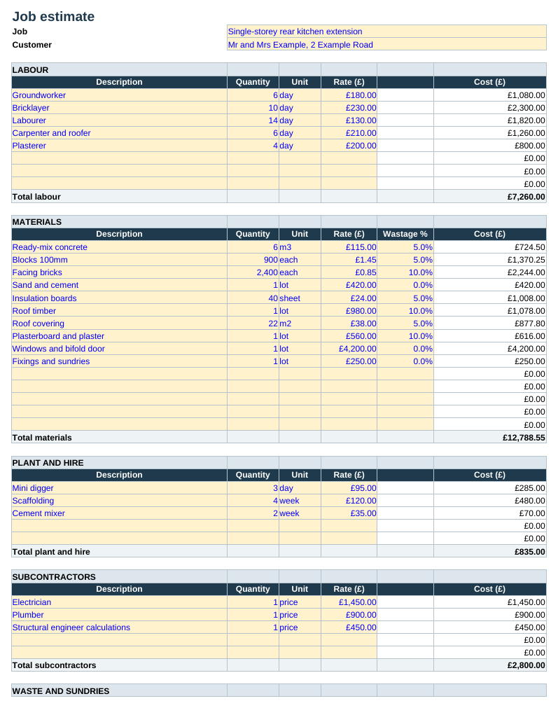
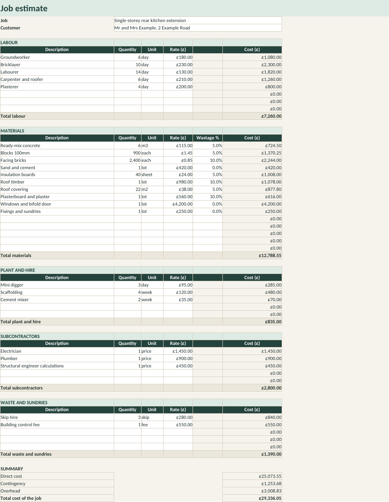
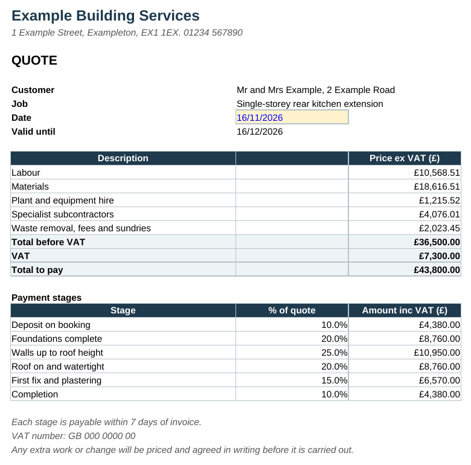
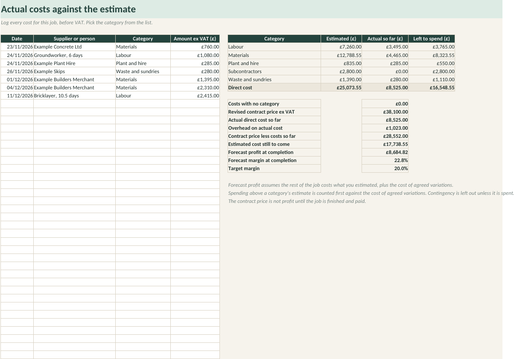

Builders Job Pack
One Excel file for each building job: estimate it, quote it, bill it in stages, keep track of the extras and see what it really made. For small builders and trades who price work job by job.
Buy for £29One-off payment. Two Excel files (.xlsx), delivered as a download.

What you get
- An estimate sheet with separate sections for labour, materials, plant and hire, subcontractors, and waste and sundries
- A wastage percentage on every material line, so cuts and breakages are priced in
- Contingency and overhead added at the percentages you set, and a suggested price at your target margin
- A printable quote that shows prices by section and your payment stages, never your costs
- A stage payment schedule that tracks what has been invoiced, what has been paid and what is still to bill
- A variations log for extras, with the revised contract price worked out from the ones the customer has agreed
- A cost log that compares what you have spent with the estimate, category by category, and forecasts the profit at completion
- A dashboard that says in plain English whether the quote hits your margin, which extras are not yet agreed and the profit the job is heading for
- A sheet that checks the file for common slips, such as stages that do not add up to 100%
- A second file: a 12-month cash flow forecast with a builder's rows already set up (deposits, stage payments, materials, subcontractors, plant hire, skips), with its own dashboard, what-if switch and printable report
Who it is for
Small builders, extension and renovation firms, and trades who quote fixed prices for jobs that run for weeks: the jobs where the money is made or lost on wastage, extras nobody wrote down and stage payments nobody chased.
How one job runs through it
- Estimate. List the days, quantities and rates. The file adds wastage, contingency and overhead, and shows the price that gives your target margin.
- Quote. Enter the price you will quote. The Quote sheet splits it across the sections in proportion to cost and lists the payment stages. Print it or save it as a PDF.
- Stages. Set the percentage due at each stage. Record when each one is invoiced and paid.
- Variations. Write each extra down when it comes up, with its price and whether the customer has agreed it.
- Actuals. Log costs as you go. See what is left to spend in each category and the profit the job is heading for.



Questions
- Does it work out VAT?
- It adds VAT at the rate in Settings if you say you are VAT registered, and leaves it at zero if not. The rate starts at the 20% standard rate. Some building work is charged at a different rate or under the reverse charge. The file does not decide that for you: check which applies and change the rate.
- Are the rates and prices in it real?
- No. Every day rate, material price and figure in the example is invented to show the format. You type over them with your own.
- Can I use it for more than one job?
- Yes. Keep a blank copy and save a new copy for each job.
- How many lines does it hold?
- 8 labour lines, 15 material lines, 5 lines each for plant, subcontractors and other costs, 6 payment stages, 20 variations and 80 logged costs.
- Is it the same as the Job Costing Calculator?
- No. The Job Costing Calculator (£8) prices a single job on one sheet for any trade. This pack follows a building job from estimate to final profit, with wastage, contingency, a quote, stage payments and variations.
- Is there a version that helps with the letters and messages too?
- Yes. The Builders Job Kit (AI-assisted) (£39) is this pack with one more sheet: six tested prompts for an AI assistant that use the job's figures to write the quote letter, a payment reminder, a variation notice and more.
- What do I need to open it?
- Microsoft Excel. The files have also been tested in LibreOffice Calc. They contain no macros.
Free to try first
The stage payment calculator splits a job price into a deposit, stages and a final payment. The markup and margin calculator shows the pricing sum this pack uses, and the free 3-month cash flow forecast shows how the forecast file works.